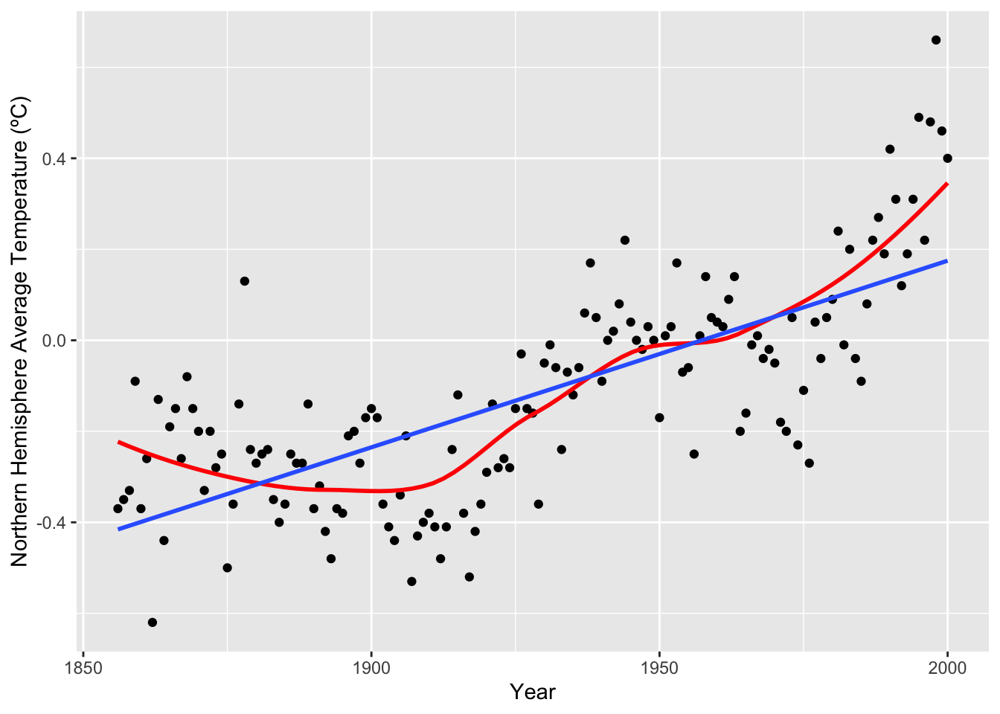
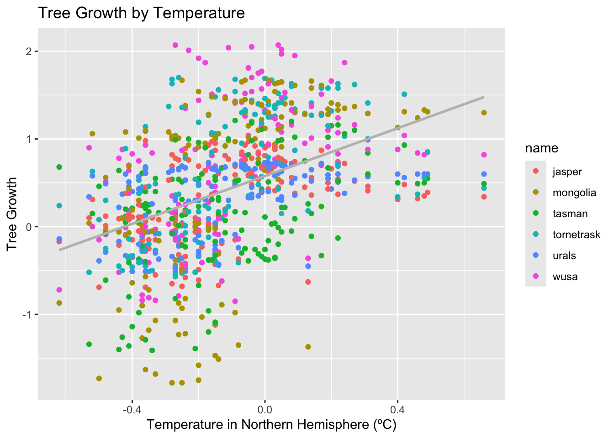
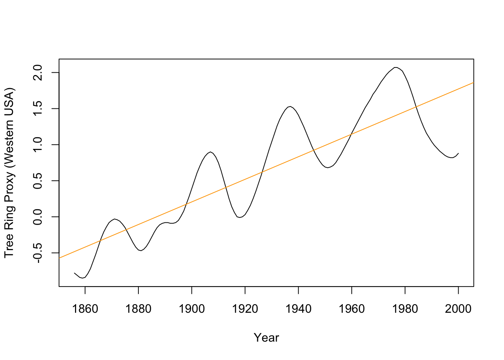
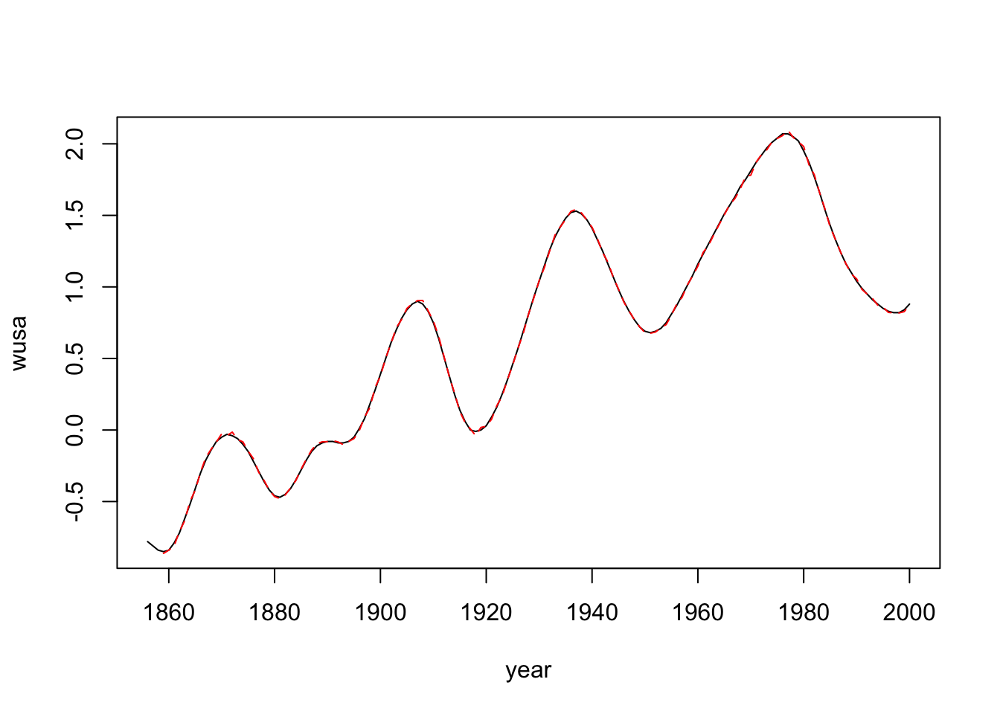
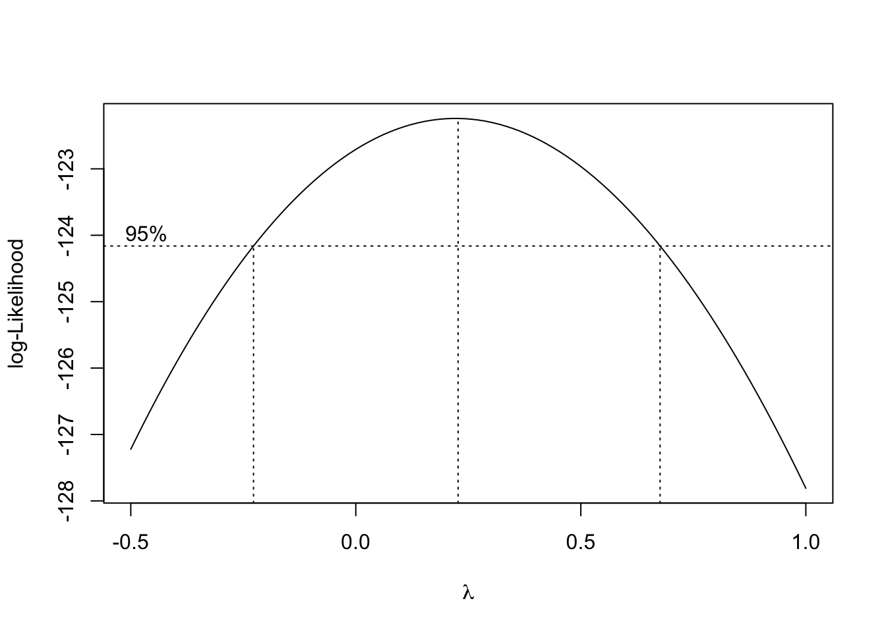
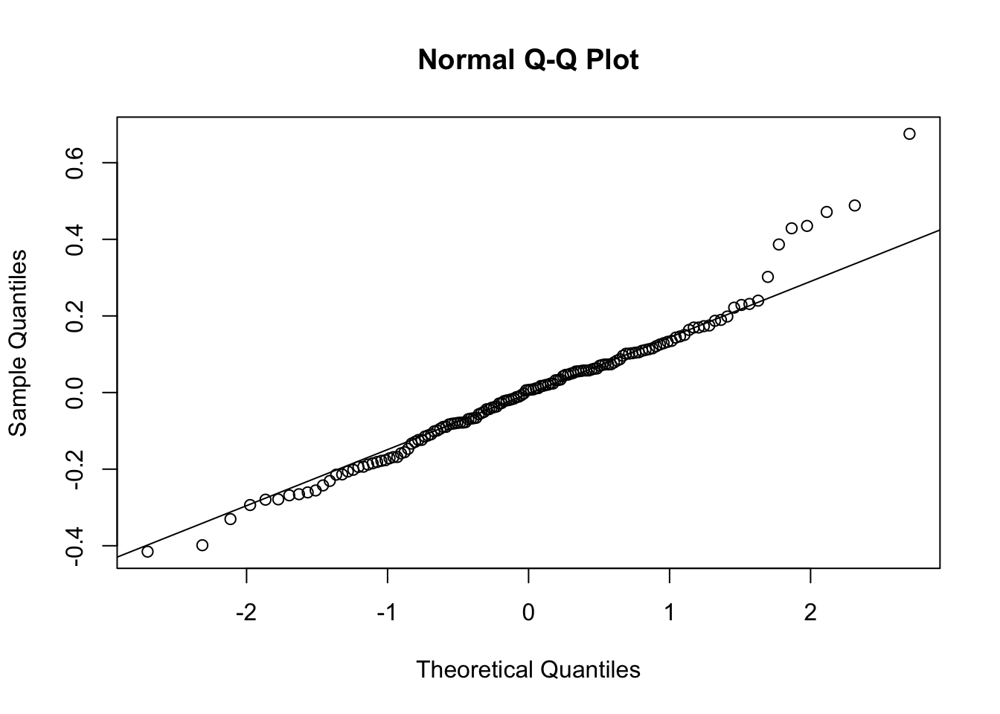
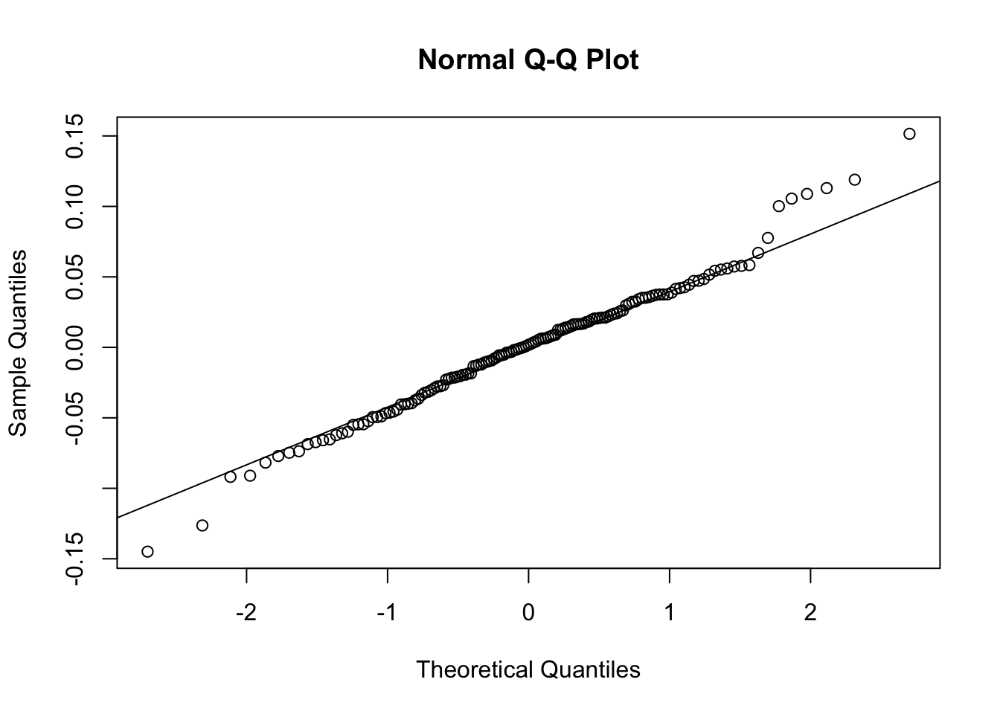

Variable | Description |
|---|---|
nhtemp | Northern hemisphere average temperature (C) provided by the UK Met Office (known as HadCRUT2) |
wusa | Tree ring proxy information from the Western USA. |
jasper | Tree ring proxy information from Canada. |
westgreen | Ice core proxy information from west Greenland |
chesapeake | Sea shell proxy information from Chesapeake Bay |
tornetrask | Tree ring proxy information from Sweden |
urals | Tree ring proxy information from the Urals |
mongolia | Tree ring proxy information from Mongolia |
tasman | Tree ring proxy information from Tasmania |
year | Year 1000-2000AD |
Prediction of Global Temperatures with Climate Proxy Variables
Introduction
In this report, I will be analyzing the dataset globwarm, which reports the Average Northern Hemisphere Temperature from 1856-2000 and eight climate proxies from 1000-2000AD. Using the information from the climate proxies above I will attempt to predict the global temperature in years predating 1856, before which temperatures are unreliable due to the lack of standardization of thermometers. To most accurately predict some of these years, I will build seven different linear regression models and evaluate each in a holistic, comprehensive manner.
Thus, the question I am hoping to answer is: which linear model is best? To answer this question, I will first conduct an exploratory analysis of the dataset and establish the periodicity of the data when viewed from a time series perspective. I will then fit a linear model using ordinary least squares to estimate the parameters \(\beta\), evaluate the need for a transformation of the response variable using Box-Cox, and communicate the parameter estimates and standard errors of the model and their meaning. Finally, I will test the assumptions of ordinary least squares against each model, find influential points in the dataset that may be affecting the fit, and establish the effect of collinearity on the model. In the conclusion, I will communicate overall findings, consider possible best models and the drawbacks to each, and ultimately predict the northern hemisphere temperature in two of the unknown years, 1850 and 1000.
Part 1
1. Data Description and Exploratory Analysis
To begin, I include here a description of the variables in the dataset globwarm.
Since the goal of this analysis is to predict temperature using the other eight climate variables, it is first necessary to obtain a subset of the data from 1856 onwards, since only these years include data on temperature.
All model building will be based on the dataset globwarm1856, since this dataset is (i.e., not NA) for all values of nhtemp, no matter the year.
To begin, let us visually observe the relationship between year and average global temperature. Included is the standard linear model of best fit in blue, and the kernel-smoothed loess curve of best fit in red.

The above graph shows that, though the data certainly has a curve to it, a linear model could be used to fit the relationship between nhtemp and year. In particular, though the residuals do not have constant variance (observe the right tail of the datapoints compared to the other datapoints), a transformation of the response, nhtemp, may result in the meeting of this assumption. Furthermore, in the most general terms, this graph shows that the average temperature in the Northern Hemisphere has been increasing as the years go on.
To further explore the dataset, observe the following graphs of tree growth dependent on year and average temperature. “Tree growth” is agglomerated from all tree ring proxy variables — the source of each datapoint (i.e., the variable it is associated with) is depicted via its color.

The above graph, “Tree Growth by Year,” most importantly displays the periodicity of tree growth over time. This pattern indicates that autoregression modelling methods will likely be most appropriate for any model that includes year as a predictor and any tree growth proxy as the response.

The above graph shows the truth of the hypothesis guiding this analysis, that information on the rate of tree growth indicates that tree growth increases in warmer temperatures. The slope of the line of best fit is positive, which means that as temperature increases, so does the rate of tree growth.
To conclude the exploratory data analysis, observe the following summary of year in relation to every other variable in the dataset.

As noted with the “Tree Growth by Year” plot above, the most important trend to be gleaned is the periodicity of each variable in relation to year. This periodicity is something that cannot accurately be modelled other than by autoregression. For the majority of the analysis, year will be removed from the predictors to be able to use standard linear regression techniques. However, in the following subsection, the autoregressive model predicting wusa, the tree ring proxy information from the western United States, using lagged variables.
2. Autoregression
To begin, let us focus on the plot of wusa vs. year, with the standard linear model \(\texttt{wusa}_i=\hat\beta_0+\hat\beta_1\texttt{year}_i\) overlaid.

The periodicity of the plot above violates the assumptions of linear regression: instead of independently and identically distributed residuals centered around a constant, the residuals will follow the periodic nature of the data itself. To account for the time series nature of the given data, one may instead build an autoregressive model by embedding “lagged” data as predictors of a dataframe. The nature of lagged data may be seen below — note how the value of wusa_og in a given observation becomes the value of lag1 in the subsequent observation, and how the value of lag1 in a given observation becomes the value of lag2 in the subsequent observation, and so on.
wusa_og lag1 lag2 lag3
1 -0.85 -0.84 -0.81 -0.78
2 -0.84 -0.85 -0.84 -0.81
3 -0.79 -0.84 -0.85 -0.84
4 -0.72 -0.79 -0.84 -0.85
5 -0.62 -0.72 -0.79 -0.84
6 -0.52 -0.62 -0.72 -0.79Using the lagdf dataset, we may predict the value of wusa given its previous values, a technique known as autoregression.
Call:
lm(formula = wusa_og ~ ., data = data.frame(lagdf))
Residuals:
Min 1Q Median 3Q Max
-0.0311282 -0.0074819 -0.0000792 0.0078532 0.0298416
Coefficients:
Estimate Std. Error t value Pr(>|t|)
(Intercept) 0.003150 0.001333 2.363 0.0195 *
lag1 2.624708 0.061706 42.536 <2e-16 ***
lag2 -2.311777 0.121175 -19.078 <2e-16 ***
lag3 0.683676 0.060810 11.243 <2e-16 ***
---
Signif. codes: 0 '***' 0.001 '**' 0.01 '*' 0.05 '.' 0.1 ' ' 1
Residual standard error: 0.01139 on 138 degrees of freedom
Multiple R-squared: 0.9998, Adjusted R-squared: 0.9998
F-statistic: 2.085e+05 on 3 and 138 DF, p-value: < 2.2e-16From the above summary, one sees that the fit of the autoregressive model predicting wusa is nearly perfect: the \(R^2\) value is 0.9998, with the maximum possible \(R^2\) being 1. The fit of the model can be seen visually in the plot below. The original wusa data is included as a black solid line, while the autoregressive fit is included as a red dashed line.

It is thus clear that the periodic nature of the wusa data over time is captured by the autoregressive model. The problem with the assumptions that appeared in the standard linear model does not occur here; the periodicity of the data will not be replicated in the residuals.
Now, to employ the autoregression as a predictive model, one must first observe the final entry of lagdf dataset, which corresponds to the data for the year 2000.
wusa_og lag1 lag2 lag3
142 0.88 0.84 0.82 0.82Due to the nature of the construction of the lagged data, the values of wusa_og, lag1, and lag2 may be plugged in for lag1, lag2, and lag3, respectively to predict the value of wusa in 2001. These calculations are accomplished below, and the 95% confidence interval is included in the results.
fit lwr upr
1 0.9316155 0.9088515 0.9543796[1] 0.6089223Thus, the expected value of wusa in 2001 is 0.9316155, with the 95% confidence interval being \((0.9088515, 0.9543796)\). This confidence interval is a bit wide given the spread of the data: in globwarm1856, the variance of wusa is approximately 0.6, which means that a confidence interval of width just under 0.5 is almost equal to the variance of the data.
Similar to the method above, to predict the value of wusa in 2002, one may plug in the values of wusa_og, and lag1 from the last row of lagdf for lag2 and lag3, while the expected value for 2001 calculated above may be used as the estimate for lag1. The calculation and confidence interval are thus returned.
fit lwr upr
1 0.9958969 0.9731721 1.018622The expected value of wusa in 2002 is 0.9958969, with the 95% confidence interval being \((0.9731721, 1.018622)\). The width of this confidence interval is approximately 0.3, with is smaller than the width of the previous confidence interval and approximately half of the variance of wusa in globwarm1956.
Autoregression techniques are useful for predicting explicitly time-series data, like tree ring proxy information predicted by year. However, using the climate proxy information in isolation from year, one may build a standard linear regression model without using autoregression. Models of this form will be built and evaluated in the following sections.
Part 2
3. Full Model and Stepwise Elimination
To begin, observe the following standard linear regression model, which assigns nhtemp as the response and all eight climate proxies as predictors. This model will be referred to as the “full model,” the linear regression model with no transformations and all possible predictors (except year).
Call:
lm(formula = nhtemp ~ wusa + jasper + westgreen + chesapeake +
tornetrask + urals + mongolia + tasman, data = globwarm1856)
Residuals:
Min 1Q Median 3Q Max
-0.43668 -0.11170 0.00698 0.10176 0.65352
Coefficients:
Estimate Std. Error t value Pr(>|t|)
(Intercept) -0.242555 0.027011 -8.980 1.97e-15 ***
wusa 0.077384 0.042927 1.803 0.073647 .
jasper -0.228795 0.078107 -2.929 0.003986 **
westgreen 0.009584 0.041840 0.229 0.819168
chesapeake -0.032112 0.034052 -0.943 0.347346
tornetrask 0.092668 0.045053 2.057 0.041611 *
urals 0.185369 0.091428 2.027 0.044567 *
mongolia 0.041973 0.045794 0.917 0.360996
tasman 0.115453 0.030111 3.834 0.000192 ***
---
Signif. codes: 0 '***' 0.001 '**' 0.01 '*' 0.05 '.' 0.1 ' ' 1
Residual standard error: 0.1758 on 136 degrees of freedom
Multiple R-squared: 0.4764, Adjusted R-squared: 0.4456
F-statistic: 15.47 on 8 and 136 DF, p-value: 5.028e-16From the summary above, one observes half of the variables as significant (jasper, tornetrask, urals, and tasman), with a poor \(R^2\) value of 0.4764. The fit of this model may be improved using stepwise regression, which sequentially compares models via their Aikake’s Important Criterion (AIC), defined elimination \(AIC=-2L(\hat\theta)+2p\), where \(-2L(\hat\theta)=n\log{(RSS/n)}+c\) for sample size \(n\), number of parameters \(p\), residual sum of squares \(RSS\), and some constant \(c\). This process ceases upon finding the best selection of predictors without a transformation of the response.
Start: AIC=-495.48
nhtemp ~ wusa + jasper + westgreen + chesapeake + tornetrask +
urals + mongolia + tasman
Df Sum of Sq RSS AIC
- westgreen 1 0.00162 4.2033 -497.43
- mongolia 1 0.02595 4.2276 -496.59
- chesapeake 1 0.02747 4.2291 -496.54
<none> 4.2017 -495.48
- wusa 1 0.10040 4.3021 -494.06
- urals 1 0.12700 4.3287 -493.16
- tornetrask 1 0.13070 4.3324 -493.04
- jasper 1 0.26509 4.4668 -488.61
- tasman 1 0.45420 4.6559 -482.60
Step: AIC=-497.43
nhtemp ~ wusa + jasper + chesapeake + tornetrask + urals + mongolia +
tasman
Df Sum of Sq RSS AIC
- mongolia 1 0.02433 4.2276 -498.59
- chesapeake 1 0.03010 4.2334 -498.39
<none> 4.2033 -497.43
- urals 1 0.12588 4.3292 -495.15
- tornetrask 1 0.17416 4.3775 -493.54
- wusa 1 0.17898 4.3823 -493.38
- jasper 1 0.27028 4.4736 -490.39
- tasman 1 0.46472 4.6680 -484.22
Step: AIC=-498.59
nhtemp ~ wusa + jasper + chesapeake + tornetrask + urals + tasman
Df Sum of Sq RSS AIC
<none> 4.2276 -498.59
- chesapeake 1 0.08207 4.3097 -497.80
- urals 1 0.19293 4.4206 -494.12
- tornetrask 1 0.24611 4.4737 -492.38
- jasper 1 0.24694 4.4746 -492.36
- wusa 1 0.30524 4.5329 -490.48
- tasman 1 0.45557 4.6832 -485.75
Call:
lm(formula = nhtemp ~ wusa + jasper + chesapeake + tornetrask +
urals + tasman, data = globwarm1856)
Coefficients:
(Intercept) wusa jasper chesapeake tornetrask urals
-0.25497 0.09703 -0.21360 -0.04788 0.10893 0.21017
tasman
0.11268 The step() function chooses the model with predictors wusa, jasper, chesapeake, tornatrask, urals, and tasman as the best model, eliminating westgreen and mongolia. Thus, observe the model chosen by stepwise elimination below.
Call:
lm(formula = nhtemp ~ wusa + jasper + chesapeake + tornetrask +
urals + tasman, data = globwarm1856)
Residuals:
Min 1Q Median 3Q Max
-0.41534 -0.10133 0.00671 0.09609 0.67544
Coefficients:
Estimate Std. Error t value Pr(>|t|)
(Intercept) -0.25497 0.02149 -11.864 < 2e-16 ***
wusa 0.09703 0.03074 3.157 0.001961 **
jasper -0.21360 0.07523 -2.839 0.005207 **
chesapeake -0.04788 0.02925 -1.637 0.103955
tornetrask 0.10893 0.03843 2.834 0.005281 **
urals 0.21017 0.08375 2.509 0.013246 *
tasman 0.11268 0.02922 3.856 0.000176 ***
---
Signif. codes: 0 '***' 0.001 '**' 0.01 '*' 0.05 '.' 0.1 ' ' 1
Residual standard error: 0.175 on 138 degrees of freedom
Multiple R-squared: 0.4732, Adjusted R-squared: 0.4503
F-statistic: 20.66 on 6 and 138 DF, p-value: < 2.2e-16Nearly all variables are significant. The multiple \(R^2\) decreased from the full model, which makes sense, since \(R^2\) “rewards” the addition of more variables — \(R^2=1-\frac{RSS}{TSS}\), and \(RSS\) can only increase upon the inclusion of more variables. However, the adjusted \(R^2\), which is defined as \(R_a^2=1-\frac{\hat\sigma_{model}^2}{\hat\sigma_{null}^2}\), only increases if the inclusion of a variable increases the predictive value of the model. Thus, observing the adjusted \(R^2\) of both models, one sees that it is higher in the model selected by stepwise elimination.
4. Box-Cox Transformation
To proceed building and evaluating models, it will be fruitful to evaluate the possible necessity for a transformation of the response variable, nhtemp. The method of evaluating possible transformations of the response is the Box-Cox transformation, which transforms a given response \(y\) to one of the form \[g_\lambda(y)=\begin{cases}y^\lambda & \lambda \not = 0 \\ \log{y} & \lambda=0\end{cases}\] where \(\lambda\) is estimated by maximum likelihood. Thus, if the 95% confidence interval of \(\lambda\) includes 1, it is most likely that no transformation is necessary; otherwise, the expected value of \(\lambda\) should be used to transform the response.
One crucial aspect of Box-Cox transformation is that it requires the response to take only positive values. To check that this assumption is met, one can get a summary of the variable nhtemp in globwarm1856.
Min. 1st Qu. Median Mean 3rd Qu. Max.
-0.6200 -0.2800 -0.1500 -0.1203 0.0300 0.6600 The summary reveals that a majority of the nhtemp data is negative, which makes sense in terms of what the data is actually communicating: in layman’s terms, this means that a majority of days in the northern hemisphere are below freezing (0º C). Since the minimum value of nhtemp is small in terms of absolute value, one can amend the negative values by scaling values by 1, which will modify the intercept term in the linear regression model but none of the other coefficents (since the general structure of the data is preserved).
Now there exists a variable nhtemp_pos which takes only positive values while maintaining the structure of the original response, nhtemp. This variable may thus be used instead of the original to test the need for a transformation via Box-Cox. The log-Likelihood function of \(\lambda\) is plotted below, with the 95% confidence interval denoted with dashed lines.

Notably, 1 is not within the 95% confidence interval for \(\lambda\), meaning a transformation of the response is necessary. I have chosen \(\lambda=0.25\), which seems close to the expected value of \(\lambda\) (the middlemost vertical dashed line above).
To evaluate the efficacy of this transformation, one may build linear regression models that include the transformation and compare them to those that do not. Below are the models equivalent to the full model and stepwise elimination model introduced in the above subsection, with the transformation \(g(y)=y^{0.25}\) applied to the response. Though not included in the output here, I have also updated the previous models to assign nhtemp_pos as the response — these models will be discussed in the Conclusion section. We look first at the summary of the full model with the Box-Cox transformation applied.
Call:
lm(formula = I(nhtemp_pos^(0.25)) ~ wusa + jasper + westgreen +
chesapeake + tornetrask + urals + mongolia + tasman, data = globwarm1856)
Residuals:
Min 1Q Median 3Q Max
-0.141734 -0.029997 0.001866 0.027110 0.147567
Coefficients:
Estimate Std. Error t value Pr(>|t|)
(Intercept) 0.925782 0.007348 125.996 < 2e-16 ***
wusa 0.023906 0.011677 2.047 0.042558 *
jasper -0.048674 0.021247 -2.291 0.023507 *
westgreen 0.004431 0.011382 0.389 0.697643
chesapeake -0.007233 0.009263 -0.781 0.436242
tornetrask 0.029749 0.012255 2.427 0.016514 *
urals 0.036395 0.024871 1.463 0.145675
mongolia 0.007818 0.012457 0.628 0.531292
tasman 0.028598 0.008191 3.491 0.000648 ***
---
Signif. codes: 0 '***' 0.001 '**' 0.01 '*' 0.05 '.' 0.1 ' ' 1
Residual standard error: 0.04781 on 136 degrees of freedom
Multiple R-squared: 0.4805, Adjusted R-squared: 0.4499
F-statistic: 15.72 on 8 and 136 DF, p-value: 3.055e-16Notice above that 4 of the 8 predictors are significant, the multiple \(R^2\) has increased from the full model, the adjusted \(R^2\) has increased as well, and, most importantly, the residual standard error has decreased significantly. Now, we look at the summary of the stepwise elimination model with the Box-Cox transformation applied.
Call:
lm(formula = I(nhtemp_pos^(0.25)) ~ wusa + jasper + chesapeake +
tornetrask + urals + tasman, data = globwarm1856)
Residuals:
Min 1Q Median 3Q Max
-0.144926 -0.029058 0.001823 0.026186 0.151504
Coefficients:
Estimate Std. Error t value Pr(>|t|)
(Intercept) 0.922889 0.005838 158.097 < 2e-16 ***
wusa 0.028913 0.008350 3.463 0.000712 ***
jasper -0.046562 0.020436 -2.278 0.024237 *
chesapeake -0.010209 0.007946 -1.285 0.201036
tornetrask 0.033753 0.010439 3.233 0.001531 **
urals 0.039463 0.022749 1.735 0.085029 .
tasman 0.027687 0.007937 3.488 0.000653 ***
---
Signif. codes: 0 '***' 0.001 '**' 0.01 '*' 0.05 '.' 0.1 ' ' 1
Residual standard error: 0.04754 on 138 degrees of freedom
Multiple R-squared: 0.4787, Adjusted R-squared: 0.4561
F-statistic: 21.12 on 6 and 138 DF, p-value: < 2.2e-16Notice above that 4 of the 6 predictors are significant, the multiple \(R^2\) has increased from the full model, the adjusted \(R^2\) has increased as well, and, most importantly, the residual standard error has decreased significantly. Overall, both Box-Cox transformed models perform better or equivalently to the pre-transformation models on all fronts.
5./6. Parameter Estimates and Standard Errors
To view and compare the paramter (i.e., coefficient) estimates and their standard errors, one may use the function compareCoefs() from the car package. We do so below. The first two columns represent the pre-transformation models (full and stepwise elimination), while the second two represent the post-transformation models.
Calls:
1: lm(formula = nhtemp ~ wusa + jasper + westgreen + chesapeake +
tornetrask + urals + mongolia + tasman, data = globwarm1856)
2: lm(formula = nhtemp ~ wusa + jasper + chesapeake + tornetrask + urals +
tasman, data = globwarm1856)
3: lm(formula = I(nhtemp_pos^(0.25)) ~ wusa + jasper + westgreen +
chesapeake + tornetrask + urals + mongolia + tasman, data = globwarm1856)
4: lm(formula = I(nhtemp_pos^(0.25)) ~ wusa + jasper + chesapeake +
tornetrask + urals + tasman, data = globwarm1856)
Model 1 Model 2 Model 3 Model 4
(Intercept) -0.24256 -0.25497 0.92578 0.92289
SE 0.02701 0.02149 0.00735 0.00584
wusa 0.07738 0.09703 0.02391 0.02891
SE 0.04293 0.03074 0.01168 0.00835
jasper -0.2288 -0.2136 -0.0487 -0.0466
SE 0.0781 0.0752 0.0212 0.0204
westgreen 0.00958 0.00443
SE 0.04184 0.01138
chesapeake -0.03211 -0.04788 -0.00723 -0.01021
SE 0.03405 0.02925 0.00926 0.00795
tornetrask 0.0927 0.1089 0.0297 0.0338
SE 0.0451 0.0384 0.0123 0.0104
urals 0.1854 0.2102 0.0364 0.0395
SE 0.0914 0.0837 0.0249 0.0227
mongolia 0.04197 0.00782
SE 0.04579 0.01246
tasman 0.11545 0.11268 0.02860 0.02769
SE 0.03011 0.02922 0.00819 0.00794
The greatest variation in parameter between the models occurs in (Intercept), which is to be expected since the Box-Cox evaluation required that the response be scaled by a constant. Otherwise, the parameters are either positive or negative across all four models, not a mix of the two. The parameter estimates of the non-transformed models tend to be more similar (in terms of absolute value) to each other than to the other models, and the same is true for the post-transformation models. Additionally, the standard error for each parameter decreases upon transformation of the response.
We can interpret the parameters contextually to provide further information about the nature of the model. To do so, let us look in particular at Model 1 above, the full model. In general, to interpret these parameters, one must imagine a world in which all variables except the one in question are held constant; for example, if one were to examine the parameter for mongolia, they would have to imagine that the trees in the western United States, Canada, Sweden, the Urals, and Tasmania did not grow, that the ice core in west Greenland did not melt or freeze further, and that the seashells found in Chesapeake Bay did not change either. Parameters may only be interpreted in isolation if other variables are held constant.
Thus, if none of the climate proxy information changed between two subsequent years, then the average yearly temperature in the Northern Hemisphere would be expected to decrease by 0.24256 ºC (this corresponds to the (Intercept) term).
If only the tree ring proxy information from Western USA changed, then for every unit that it increased/decreased, the average yearly temperature would be expected to change in the same direction by 0.07738 ºC.
If only the tree ring proxy information from Canada changed, then for every unit that it increased/decreased, the average yearly temperature would be expected to change in the opposite direction by 0.2288 ºC.
If only the ice core proxy information from west Greenland changed, then for every unit that it increased/decreased, the average yearly temperature would be expected to change in the same direction by 0.00958 ºC.
If only the seashell proxy information from Chesapeake Bay changed, then for every unit that it increased/decreased, the average yearly temperature would be expected to change in the opposite direction by 0.03211 ºC.
If only the tree ring proxy information from Sweden changed, then for every unit that it increased/decreased, the average yearly temperature would be expected to change in the same direction by 0.0927 ºC.
If only the tree ring proxy information from the Urals changed, then for every unit that it increased/decreased, the average yearly temperature would be expected to change in the same direction by 0.1854 ºC.
If only the tree ring proxy information from Mongolia changed, then for every unit that it increased/decreased, the average yearly temperature would be expected to change in the same direction by 0.04197 ºC.
If only the tree ring proxy information from Tasmania changed, then for every unit that it increased/decreased, the average yearly temperature would be expected to change in the same direction by 0.11545 ºC.
A similar interpretation could be repeated for the other models above. However, these types of interpretations are not the most realistic for the given problem. In cases of experimental data, one has control over different factors and thus the “holding constant” of variables can have a tangible meaning. In cases of observational data, like globwarm, there is no such control over variables: it is impossible to stop a tree from growing for a year in the real world. Nevertheless, these interpretations do contribute to the understanding of the inner workings of the linear model, which can in turn give insights on the real world. For example, taking note of the fact that none of the parameters have an absolute value greater than 0.5, it can be stated that — in general — processes of climate change occur gradually, rather than rapidly.
Part 3
7. Regression Diagnostics
In building the above models, some assumptions have been invoked without testing their validity. In this section, the goal is to test whether or not (1) the residuals of the models have constant variance, and (2) whether the residuals of the models are normally distributed. To do so, I have written the following function. The function first produces a plot of residuals against fitted values to evaluate (1) and a Q-Q plot to test (2). Then, the function tests (1) using the non-constant variance test and (2) using the Shapiro-Wilks’ test of normality.
We begin by evaluating the validity of the assumptions on the full model.

Non-constant Variance Score Test
Variance formula: ~ fitted.values
Chisquare = 5.343177, Df = 1, p = 0.020804
Shapiro-Wilk normality test
data: resid(lm)
W = 0.97456, p-value = 0.00842There seem to be areas of the Residuals vs. Fitted plot where the residuals bunch closer to zero (e.g. the interval [-0.4,-0.3]), and areas with higher variance (e.g. the interval [-0.1,0]). Furthermore, the rightmost tail of the Q-Q plot data trails far away from the line \(y=x\). This leads me to believe that neither of the assumptions are met, which is confirmed by the small \(p\)-values present in the nonconstant variance and Shapiro-Wilks’ tests. These small \(p\)-values indicate that the null hypotheses should be rejected, which correspond to homoskedasticity and normality, respectively. In other words, this model’s residuals are heterskedastic and non-normal.
Now, we look at the stepwise elimination model.


Non-constant Variance Score Test
Variance formula: ~ fitted.values
Chisquare = 3.755518, Df = 1, p = 0.052633
Shapiro-Wilk normality test
data: resid(lm)
W = 0.96745, p-value = 0.001601There is less of an issue with “bunching” than in the previous model, with some instances of much greater variance (e.g. [-0.1,0]). The rightmost tail again trails far from the line \(y=x\), indicating non-normality. The nonconstant variance test returns a \(p\)-value just above 0.05, meaning the null is not rejected, but the Shapiro-Wilks’ test returns \(p<0.05\), meaning the residuals are not normally distributed. Thus, the assumptions are not met by the stepwise elimination model either.
Now we observe the full model with the response transformed via Box-Cox.


Non-constant Variance Score Test
Variance formula: ~ fitted.values
Chisquare = 0.003355372, Df = 1, p = 0.95381
Shapiro-Wilk normality test
data: resid(lm)
W = 0.98782, p-value = 0.2349Looking at the vertical axes of both plots, we note that they are on a notably smaller order of magnitude than the above two models’ were. Thus, though the shape of the Residuals vs. Fitted plot appears similar, the variance of the residuals is actually closer to constant. Similarly, the rightmost tail of the Q-Q plot does not trail nearly as much as in the two previous examples. Thus, it seems that the assumptions are met. This is confirmed by the two tests, both of which return \(p>0.05\), meaning we fail to reject the null in both cases. Therefore, the Box-Cox transformation model with all predictors meets the assumptions.
We turn our attention now to the Box-Cox transformed model with predictors chosen by stepwise elimination.


Non-constant Variance Score Test
Variance formula: ~ fitted.values
Chisquare = 0.01402778, Df = 1, p = 0.90572
Shapiro-Wilk normality test
data: resid(lm)
W = 0.98568, p-value = 0.1378Just as above, the vertical axes are on a smaller order of magnitude than the first two models, so the variation in the Residuals vs. Fitted plot is smaller and the tail of the Q-Q plots travels less far away from the line \(y=\). The hypothesis tests again confirm that the assumptions are met.
Thus, overall, the Box-Cox transformed models meet the assumptions of linear regression, while the ones without the transformation do not.
8. Unusual Observations
Certain observations can drastically affect the fit of a linear model. Such observations, termed “influential points,” may be found via a series of heuristics regarding the “distance” of an observation from its fitted value. I have written the following function to streamline finding influential points. First, it finds all points with large leverage, which are generally defined as those points which have a high impact in the fitting of a linear model. Heuristically, they are defined as those whose leverage are more than twice the mean of the hat values (recalling that the hat values are the diagonals of \(H=X(X^TX)^{-1}X^T\)). Then, it finds all outlier data, which are points that do not fit the model well, heuristically defined as those points whose standardized residuals are greater than 2 or less than -2. Finally, it checks all of these points to find the influential points, heuristically defined as those points whose Cook’s distance (\(D_i=\frac{1}{p}r_i^2\frac{h_i}{1-h_i}\), a function of both leverage and standardized residuals) is greater than \(\frac{4}{n}\), where \(n\) is the sample size.
To observe the effect of influential points on the models, let us look at the model with the worst fit (the full model with not transformation) and the model with the best fit (the transformed model with predictors selected via stepwise transformation).
[1] "Large Leverage"
named numeric(0)
[1] "Outliers"
1862 1878 1917 1918 1995 1997 1998 1999
-2.264011 2.253758 -2.570472 -2.038099 2.473404 2.652667 3.841535 2.746664
2000
2.446509
[1] "Influential Points"1862 1878 1917 1918 1995 1997 1998 1999 2000
TRUE TRUE TRUE TRUE TRUE TRUE TRUE TRUE TRUE Thus, the influential points in the original model are the observations associated with the years 1862, 1878, 1917, 1918, 1995, 1997, 1998, 1999, and 2000. We check the same for the best model.
[1] "Large Leverage"
named numeric(0)
[1] "Outliers"
1862 1878 1917 1995 1997 1998 1999 2000
-3.116175 2.280661 -2.723746 2.149998 2.423217 3.260177 2.571606 2.363861
[1] "Influential Points" 1862 1878 1917 1995 1997 1998 1999 2000
TRUE TRUE TRUE FALSE TRUE TRUE TRUE TRUE The influential points for the transformed stepwise elimination model are nearly the same as for the original, full model: 1862, 1878, 1917, 1995, 1997, 1998, 1999, and 2000. We thus see that choice of model does not have a great impact on the set of influential points. Furthermore, it is notable that the majority of influential points are from the last 10 years of the dataset; in other words, this inspection could be used as evidence that the environmental impact of modern technology is affecting global temperatures in profound ways.
For prediction purposes, we create a new dataset excluding the influential points.
Additionally, we refit the full model using this smaller dataset.
Call:
lm(formula = nhtemp_pos ~ wusa + jasper + westgreen + chesapeake +
tornetrask + urals + mongolia + tasman, data = globwarm1856_clean)
Residuals:
Min 1Q Median 3Q Max
-0.26803 -0.08915 -0.00028 0.09221 0.32473
Coefficients:
Estimate Std. Error t value Pr(>|t|)
(Intercept) 0.712301 0.021475 33.168 < 2e-16 ***
wusa 0.124087 0.033424 3.713 0.000306 ***
jasper -0.111048 0.059732 -1.859 0.065328 .
westgreen -0.001757 0.031646 -0.056 0.955818
chesapeake -0.074221 0.026616 -2.789 0.006109 **
tornetrask 0.192578 0.036680 5.250 6.2e-07 ***
urals 0.026577 0.072313 0.368 0.713841
mongolia -0.051917 0.036165 -1.436 0.153589
tasman 0.059068 0.024097 2.451 0.015594 *
---
Signif. codes: 0 '***' 0.001 '**' 0.01 '*' 0.05 '.' 0.1 ' ' 1
Residual standard error: 0.1301 on 127 degrees of freedom
Multiple R-squared: 0.6041, Adjusted R-squared: 0.5792
F-statistic: 24.23 on 8 and 127 DF, p-value: < 2.2e-16Both the \(R^2\) and adjusted \(R^2\) have increased from the full model, and the residual standard error has decreased. The number of significant predictors is constant between the two. To further demonstrate the improvement this has caused, let us rerun the diagnostic analysis.


Non-constant Variance Score Test
Variance formula: ~ fitted.values
Chisquare = 1.514217, Df = 1, p = 0.2185
Shapiro-Wilk normality test
data: resid(lm)
W = 0.99005, p-value = 0.444The problems present earlier in the plots, as well as the small \(p\)-values in the nonconstant variance and Shapiro-Wilks’ tests, are all resolved. In other words, the removal of influential points allowed the original model to meet the assumptions that it previously failed to meet.
9. Collinearity
Though collinearity does not affect the predictive power of a linear regression model, it does affect the ability to discern effects of specific predictor variables on the response. Thus, though the main aim of this analysis is to predict values of nhtemp, it can also be useful to evaluate collinearity to understand the interaction between temperature and each of the climate proxies. In short, collinearity can cause instability of the parameter estimates \(\hat\beta\).
Collinearity is the phenomenon in which there exists a (usually imperfect) linear relationship between some set of predictor variables. To determine the existence of collinearity, one may calculate the condition numbers \(\kappa_i\) of the eigenvalues of the model matrix \(X\), which denote the relative size of the eigenvalues, or one may calculate the variance inflation factors (VIF) of the parameters of the model, which are large when the variance of its corresponding parameter, \(\textrm{var}\hat\beta_j\), is large.
I have written the following function to calculate and display the condition numbers of a given linear model.
We check the condition numbers of the full model as well as the stepwise elimination model (the “worst” and “best” models in terms of fit) in order to see if the removal of some predictors aided or worsened collinearity.
Eigenvalue | Condition.Number |
|---|---|
467.756817 | 1.000000 |
76.137442 | 2.478626 |
52.512153 | 2.984559 |
44.468188 | 3.243287 |
22.885193 | 4.520982 |
11.231025 | 6.453575 |
4.736246 | 9.937861 |
3.198537 | 12.093009 |
Eigenvalue | Condition.Number |
|---|---|
303.835995 | 1.000000 |
63.676924 | 2.184382 |
52.139306 | 2.413998 |
38.845297 | 2.796729 |
5.525562 | 7.415345 |
3.430116 | 9.411638 |
Large condition numbers are a sign of collinearity. Condition numbers are considered large when \(\kappa_i\geq30\). The largest condition number above, \(\kappa=12.093009\) is less than 30, meaning the method of condition numbers does not indicate the presence of collinearity. Now, we check the variance inflation factors of the full model as well as the stepwise elimination model, in the same manner as above.
wusa jasper westgreen chesapeake tornetrask urals mongolia
5.229919 5.955474 1.782338 1.978483 4.696358 6.736267 10.187902
tasman
1.635938 wusa jasper chesapeake tornetrask urals tasman
2.704498 5.572285 1.472545 3.446143 5.700140 1.553624 A variance inflation factor of 1 indicates completely orthogonal variables; the further a VIF is from 1, the greater an impact collinearity has on the instability of the model. In the larger model, there are some relatively large VIFs, namely, wusa, jasper, urals, and mongolia. The first three of these predictors’ VIFs decrease upon the removal of some predictors, while the final one is itself removed. To see the effect of the removal of some predictors, observe that the standard error for wusa in the full model is \(\sqrt{5.229919}=2.286902\) times larger than it would be without collinearity, while in the smaller model, this is reduced to \(\sqrt{2.704498}=1.644536\).
Overall, none of the condition numbers or VIFs are large enough to indicate a concerning amount of collinearity.
Conclusion
Over the course of the analysis, seven different linear regression models were built over the course of this report. A table including the \(R^2\), adjusted \(R^2\), and residual standard error (RSE) for each model is included below. The Scaled Response Models refer to the models with nhtemp_pos = nhtemp + 1 as the response variable. Note that the values in the table are exactly equal between the Scaled Response models and their equivalent original models.
Model | R.Sq | Adj.R.Sq | RSE |
|---|---|---|---|
Full Model | 0.4764458 | 0.4456485 | 0.17576870 |
Stepwise Elimination | 0.4732116 | 0.4503078 | 0.17502848 |
Scaled Response Model (all predictors) | 0.4764458 | 0.4456485 | 0.17576870 |
Scaled Response Model (stepwise predictors only) | 0.4732116 | 0.4503078 | 0.17502848 |
Box-Cox Transformation (all predictors) | 0.4804547 | 0.4498932 | 0.04781295 |
Box-Cox Transformation (stepwise predictors only) | 0.4787366 | 0.4560730 | 0.04754363 |
Full Model (no influential points) | 0.6041268 | 0.5791899 | 0.13008004 |
Based solely on the information in the above table, one could choose from several “best” models. The full model which excludes influential points has the highest \(R^2\) and adjusted \(R^2\), and, as shown above, meets all of the assumptions. However, this model there are models with lower residual standard error, and the fact that it relies on all predictors means it is more expensive in terms of data collection. Thus, I would nominate the Box-Cox transformed stepwise elimination model as the “best” model, given that it has fewer predictors, minimal residual standard error, and the second-highest adjusted \(R^2\) of all the models in this report. This model also fits the assumptions.
The worst model would necessarily be the original, full model, which has minimal \(R^2\) and adjusted \(R^2\), maximal residual standard error, and does not meet the necessary assumptions. It is furthermore expensive from a data collection standpoint since it requires all eight predictors.
In general, the major drawback of all of the above models is their lack of simple interpretability. Since the data is observational and not experimental, the metaphor of holding variables constant to simulate a simple linear regression is impossible to achieve in practice. Thus, while the transformed stepwise elimination model has good predictive capabilities, it does not have excellent explanatory power.
With all that in mind, I will predict the average temperature in the northern hemisphere in the years 1850 and 1000.
fit lwr upr
1850 0.8902689 0.7940665 0.9864712 fit lwr upr
1000 0.8609581 0.7427095 0.9792068The confidence interval is smaller for the year closer to the known dataset than the year further from it. This tracks with what is generally known about the predictive ability of linear models.